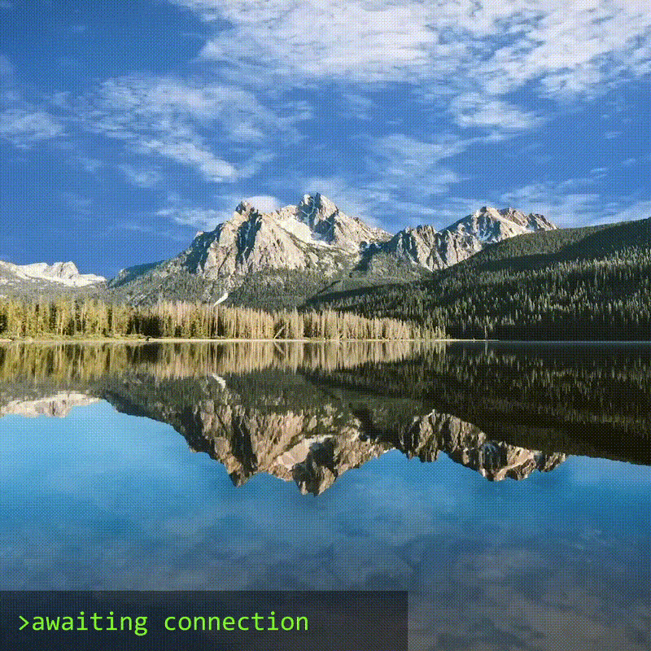
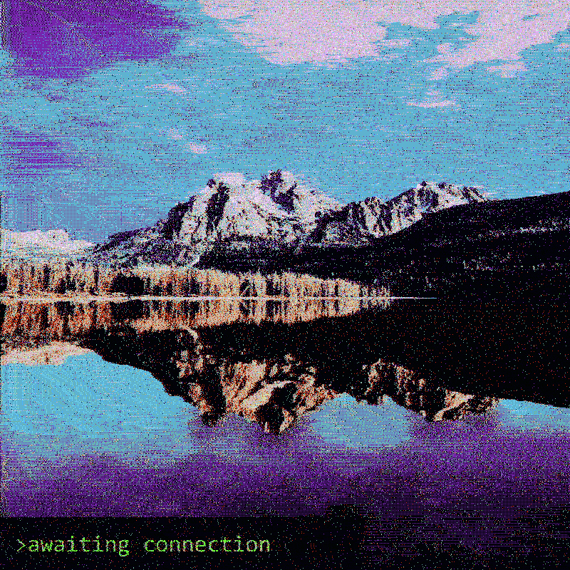

The Cloud is Not a Cloud © 2026 by
Aaron Lawlor is licensed under
CC BY-SA 4.0



Alternative version, highly compressed by 95%
The Cloud is Not a Cloud Low Resolution © 2026 by
Aaron Lawlor is licensed under
CC BY-SA 4.0


CA2 - Net Art
The Cloud is Not a Cloud
Artist Statement
The “Cloud” was promised as something weightless and clean. In reality, it sits on lands, in massive data centres and server farms built over natural landscapes. As companies continue to chase profits, protecting the environment has dropped down in the priority list, and we’re losing what makes this planet beautiful.
This looping GIF opens on a timelapse of a lake and mountains. A line of text at the bottom, styled like a console command, moves from “awaiting connection” to “resources detected” and then “optimising environment”. Tracking rectangles appear and follow the moving clouds. Inside each rectangle, the footage turns into ASCII, transitioning the natural world into code.
The scene then cuts to the inside of a data centre as the text reads “files uploaded safely”. The scene then smears and artefacts into a static image of a server room. Then it errors, corrupts and glitches back to the landscape under the message “resetting environment”. The final line, “more space required”, appears just before the loop restarts. The original scene has been used up, and the cloud must look for somewhere new to grow.
Most of us are happy to stay blissfully unaware of the foundations beneath the technology we use every day. This work does not condemn that use, but it asks us to consider the environmental cost of each technological marvel we invent. Everything has a cost, and it is up to us to decide whether the trade is worth it.
Acknowledgements
Timelapse footage:
Beauty Of Nature | Time-Lapse | Nature Videos | Nature no copyright Video by Christian Sommer, CC BY 4.0
Server room image:
Server room by Torkild Retvedt, CC BY-SA 2.0
Artist Bio
Aaron Lawlor is a digital multimedia creative based in Ireland. He is in the final year of his BA (Hons) in Creative Media at Dundalk Institute of Technology and is on track to graduate with a first-class honours degree in 2027.
Aaron has worked as a freelance photographer since 2022. He produces high-quality imagery for musicians, artists, organisations and businesses. He also manages the Instagram account for his course, and he previously interned in marketing at Medical Supply Company. Together, these roles give him a practical grounding in both creative production and brand communication.
At DkIT, Aaron led the 3D, AR and website work for Skuffle, his third-year group project. The project won 2nd place. In 2022, his group video essay “What is Curiosity? (a video essay)” won ‘Most Creative Project’ from the Irish Young Philosophers Association.
Aaron wants to keep growing as a creative and to take on new projects that combine visual storytelling, emerging technology and design.